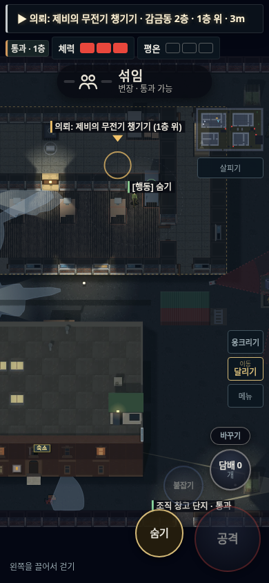
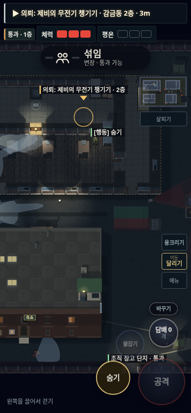
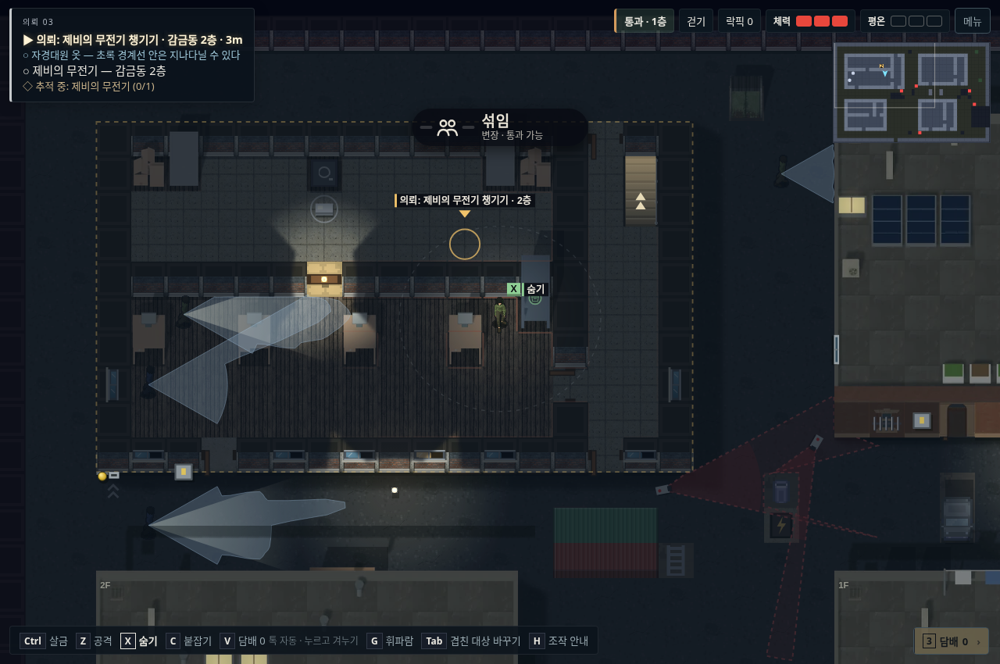
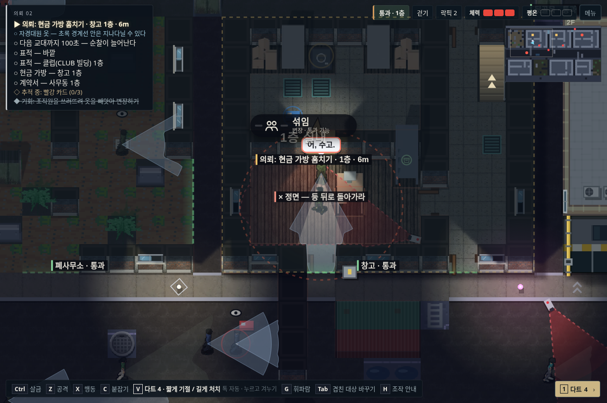

목표 HUD는 실제 건물·층을, 지도 표식은 실제 층수를 표시합니다. ‘1층 위·아래’를 반복하지 않습니다. 건달파 안내도 ‘적대 조직 발견 시 공격’으로 고쳤습니다.
실내 외벽 등반을 차단하고, 경비가 출입구·층별 방·옥상·은신처를 나눠 수색하게 했습니다. 평범한 변장을 보는 시선과 실제 발각을 구분합니다. CCTV는 방 모서리에 설치하고 담당자는 관리실에 남습니다.



같은 창고·층·플레이어 위치에서 촬영했습니다. 경비 작업점 위의 카메라를 방 오른쪽 아래 모서리로 옮겨 안쪽을 촬영합니다. 외부 카메라는 그대로입니다. 화면은 두 빌드에 같은 상태를 넣어 재현한 게임 캡처이며 실제 설치 위치·표시 코드를 사용합니다.
